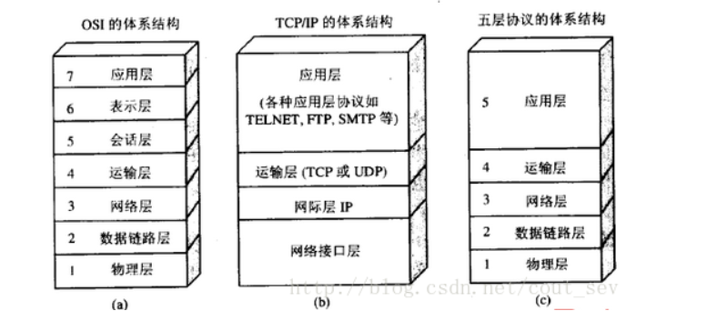
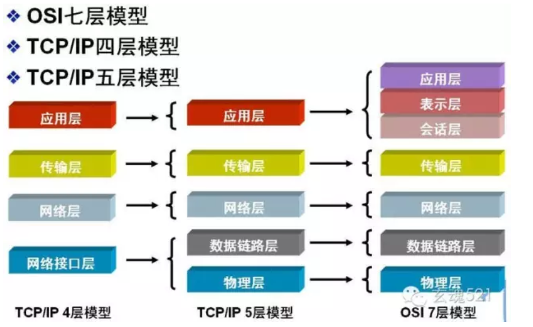

OSI
OSI 使一个计算机互联的国际标准。
OSI模型分为7层：
从下到上依次是 物理层、数据链路层、网络层、传输层、会话层、表示层、应用层；
OSI参考模型概念清楚，理论较完整，但它既复杂又不实用。
TCP/IP
TCP/IP 是目前最流行的商业化网络协议
TCP/IP采用4层体系结构：
从下到上依次是 网络接口层、网络层、运输层(TCP或UDP)、应用层(各种应用层协议如TELNET,FIP,SMTP等)
但在学习计算机网络的原理时往往采取折中的方法，综合OSI和TCP/IP的优点，采取一种只有五层协议的体系结构：
从下到上依次是 物理层、数据链路层、网络层、运输层、应用层


应用层
应用层是体系结构中的最高层，它直接为用户的应用程序提供服务，在因特网中应用层的协议很多，如支持万维网应用的http协议，支持电邮的smtp协议，支持文件传输的ftp协议等等。
运输层
运输层为两个主机中的进程间的通信提供服务
TCP: 传输控制协议，面向连接的，数据传输的单位是报文段,能够提供可靠地交付。
UDP：用户数据报协议，无连接的，数据传输的单位是用户数据报，不保证提供可靠地交付。
网络层
负责为分组交换网上的不同主机提供同重新服务
作用：
- 发送数据是，网络层把运输层产生的报文段或用户数据报封装成组或包进行传送
在TCP/IP体系中，由于网络层使用IP协议，因此分组也叫IP数据报 - 网络层的另一个任务是要选择合适的路由，使源住居有数层所传下来的分组，能够通过网络中的路由器找到目标主机
数据链路层
数据链路层主要有3个目的：
- 为IP模块发送和接收数据
- 为ARP模块发送ARP请求和接收ARP应答
- 为RARP模块发送RARP请求和接收RARP应答
链路层将网络层交下来的IP数据报组装成帧，在两个相邻结点之间的链路上透明地传送帧中的数据。控制端在接收数据时，控制信息使接收端能够知道一个帧从哪个比特开始和到哪个比特结束。这样，数据链路层在收到一个帧后，就可从中提取出数据部分，上交给网络层。控制信息还使得接收端能够检测到所收到的帧中有无差错。如果发现有差错，数据链路层就简单地丢弃这个出错的帧，以免传下去白白浪费网络资源。如果需要改正错误，就由运输层的TCP协议来完成。(数据信息的确认交给更高层的网络层或者应用层实现)
物理层
物理层：在物理层上所传数据的单位是比特。物理层的任务就是透明地传送比特流。